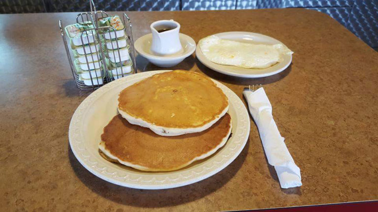
Breakfast
Eggs your way, pancakes with real butter, Texas-style French toast, waffles, omelets and a freshly baked cinnamon roll. Served any hour.
1325 S Locust St · Grand Island, Nebraska
A family owned restaurant and one of Central Nebraska's favorites. Comfort food, classic breakfasts served any hour, and a slice of homemade pie with your coffee, seven days a week.
Open daily · 6 am – 8 pm
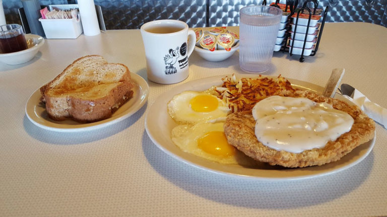
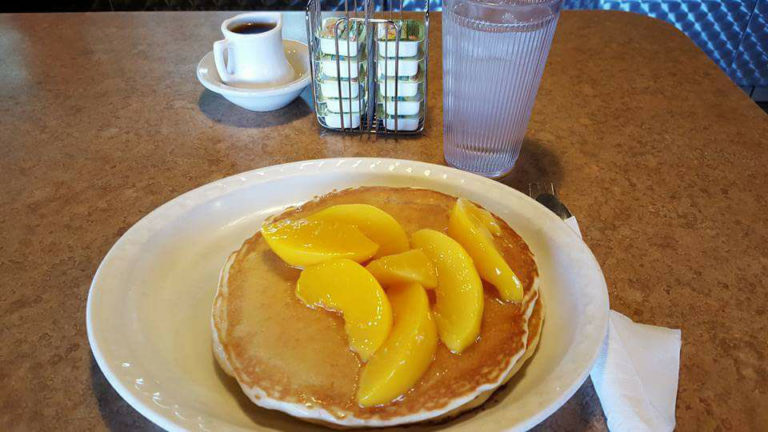
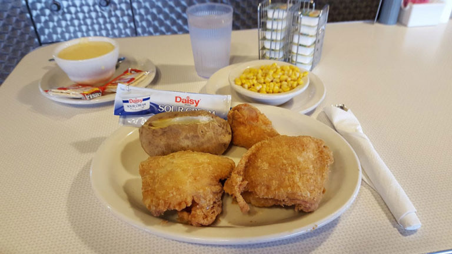
A day at Tommy's
Stop in for breakfast, lunch or dinner and choose from a variety of home-cooked meals. Our friendly staff serves the kind of food that keeps families coming back time and time again.

Eggs your way, pancakes with real butter, Texas-style French toast, waffles, omelets and a freshly baked cinnamon roll. Served any hour.
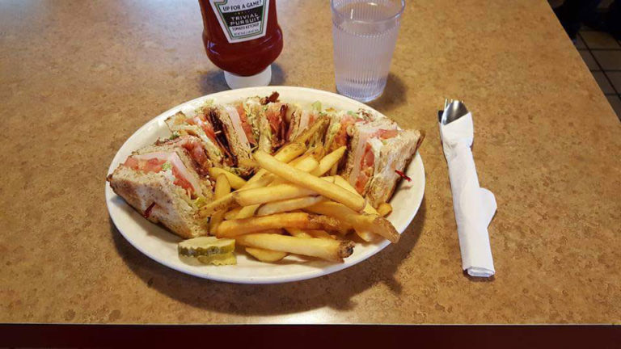
Tommy's Club, grilled Reuben, patty melts, buffalo burgers and the deep-fried pizza burger. Dine in or carry out.
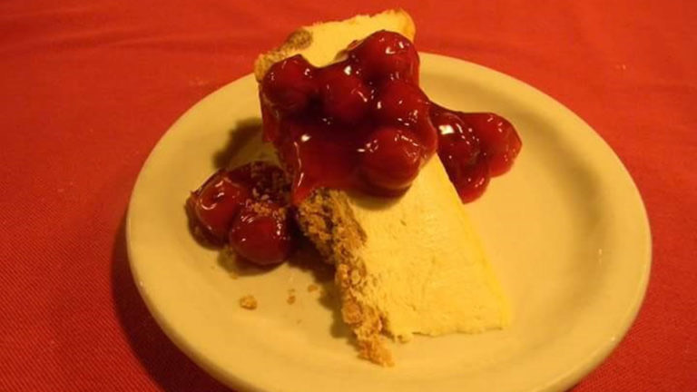
The afternoon tradition: a slice of fresh, homemade pie and a hot cup of coffee, any day of the week.
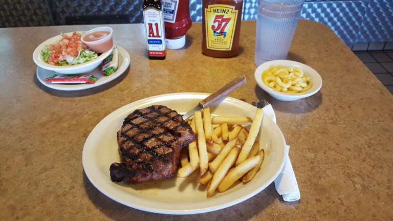
Char-broiled sirloin, meat loaf with beef gravy, fried chicken, shrimp and flounder, with a potato, a salad choice and a side.
Great food, great prices
Every day, 2–5 pm: a slice of pie & a cup of coffee. Specials can change, so ask your server or call 308-381-0440 for today's lineup.
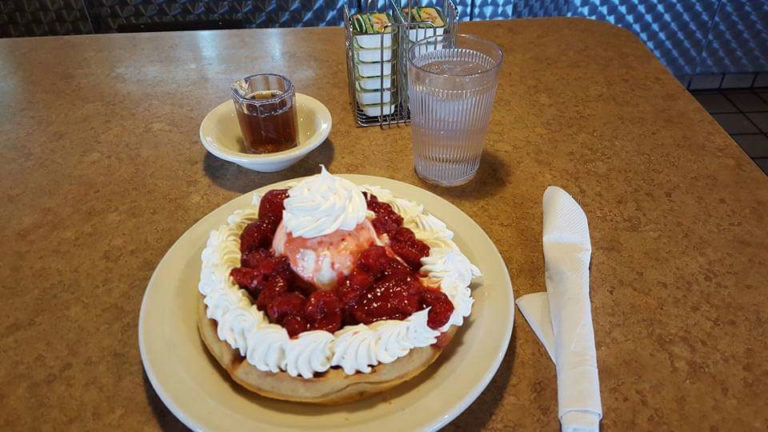

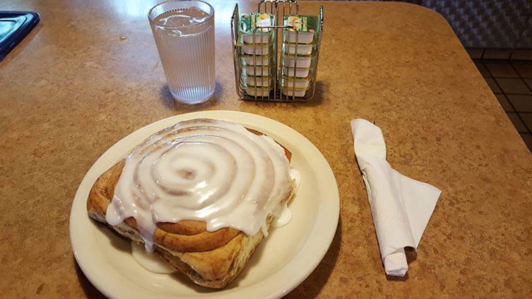
Homemade pies
Tommy's has a wide variety of fresh, homemade pies to satisfy your family's sweet tooth, plus homemade cheesecake. Enjoy a slice while dining in, or order a whole pie in advance.
Our story
We've been serving comfort food and classic breakfasts to customers in Grand Island, Nebraska for over 25 years. We're proud to be one of Central Nebraska's favorite restaurants, with a friendly staff and the highest quality meals that keep families coming back.
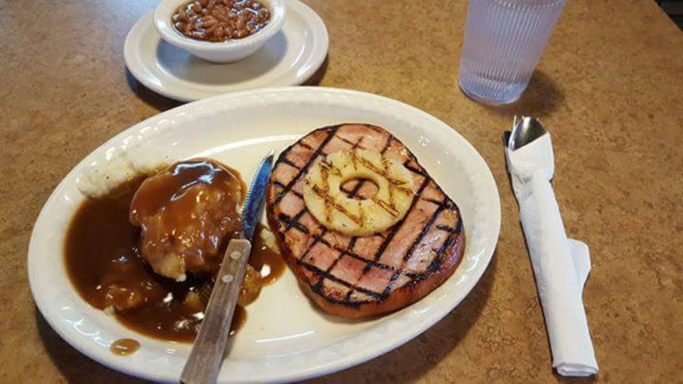
From our kitchen
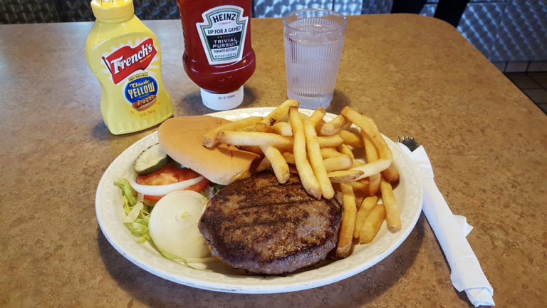
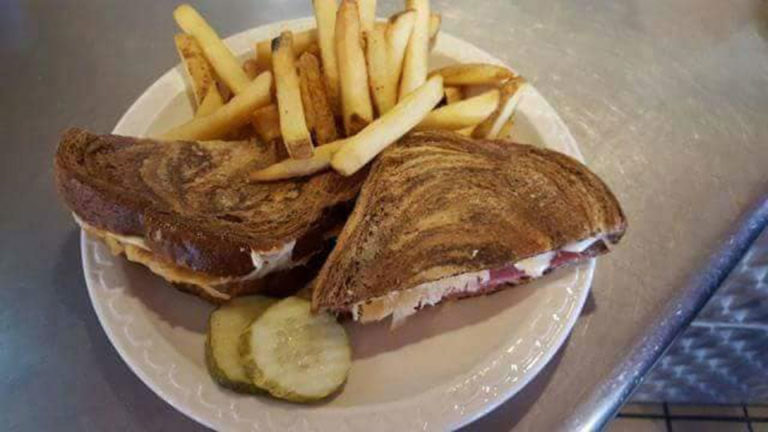
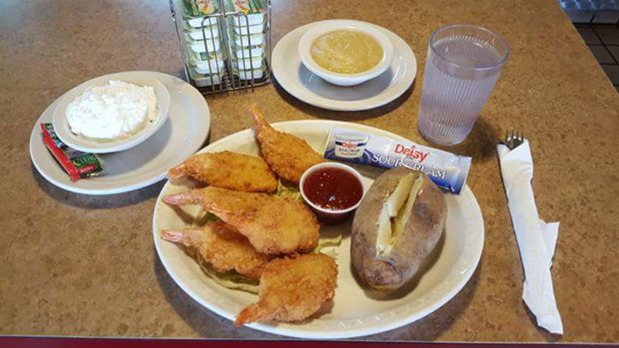
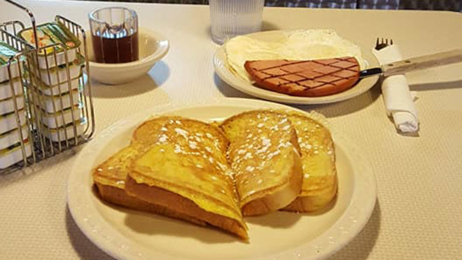
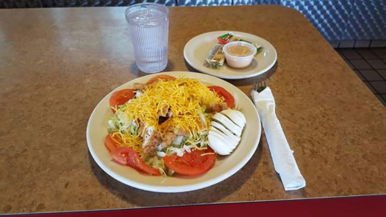
Good to know
Yes. At Tommy's, breakfast is served any hour we're open.
Yes, you can dine in or carry out. Call 308-381-0440 to place an order.
Yes. Order a whole pie in advance by calling 308-381-0440, or enjoy a slice while dining in. We also serve cheesecake.
Steaks are char-broiled and served medium rare to well done. We do not guarantee well done steaks, so we suggest medium rare, medium or medium well. Ground beef is served medium well to done only.
Yes. Egg Beaters are available at no additional charge, and you may swap toast for an English muffin or two small pancakes at no extra charge.
Come on in
Find us on South Locust Street in Grand Island. Pull up a chair, grab a booth, or call ahead for carryout.
1325 S Locust St
Grand Island, NE 68801
| Monday | 6 am – 8 pm |
| Tuesday | 6 am – 8 pm |
| Wednesday | 6 am – 8 pm |
| Thursday | 6 am – 8 pm |
| Friday | 6 am – 8 pm |
| Saturday | 6 am – 8 pm |
| Sunday | 6 am – 8 pm |